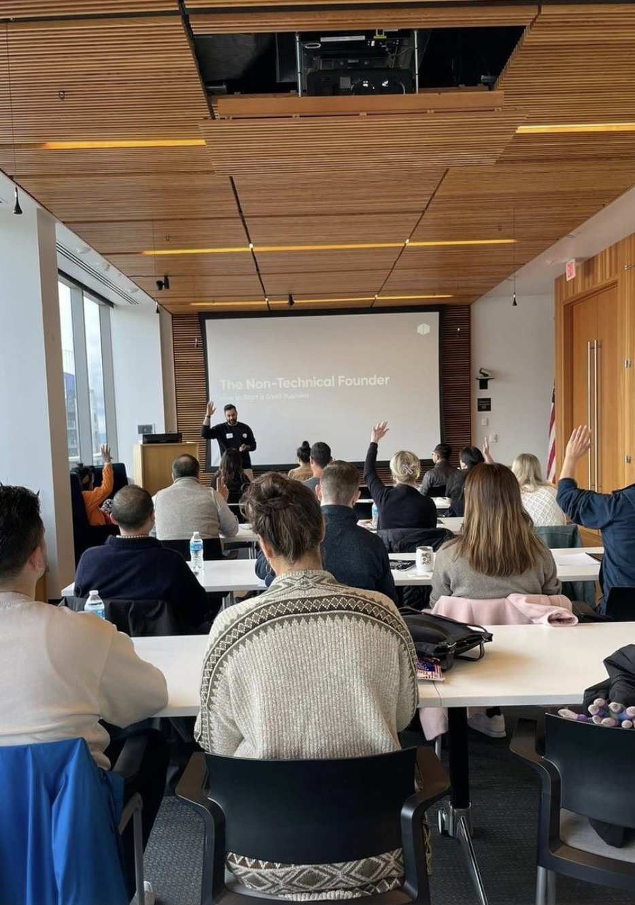
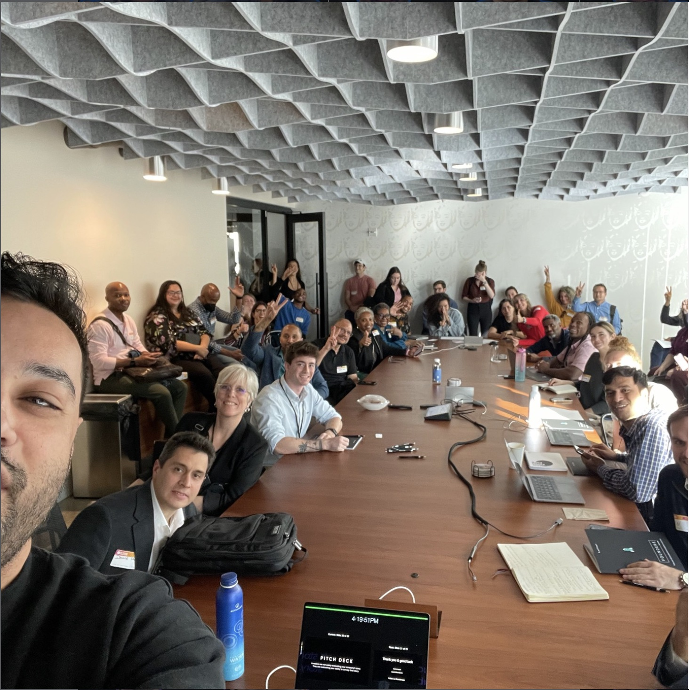
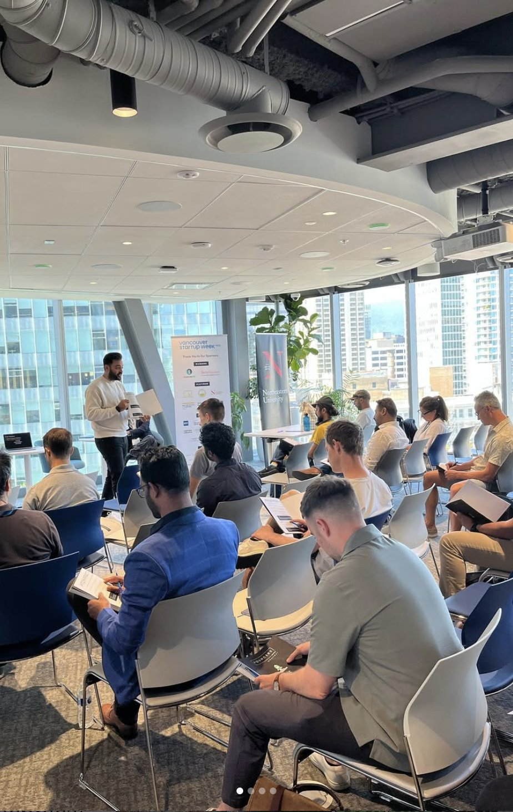
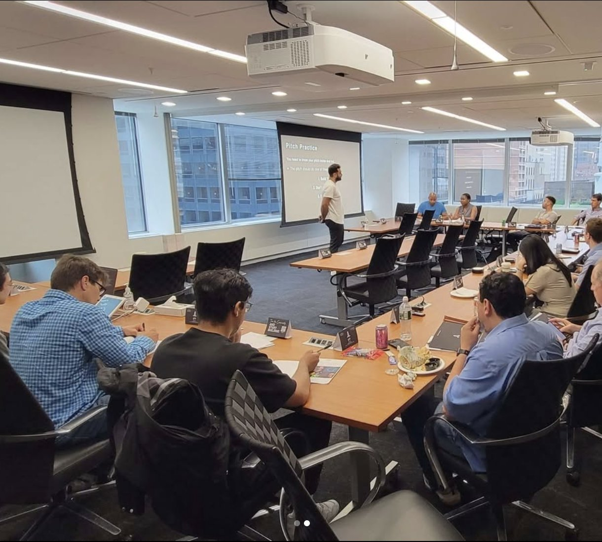

Koridor is a software agency that builds products for early-stage founders. When I joined as a contractor, they had no marketing function. Growth was entirely word-of-mouth, and the team was trying a bit of everything — throwing tactics at the wall to see what stuck.
One thing had worked: a workshop they’d run in Calgary called “How to Build Your MVP for Non-Technical Founders.” It was a hands-on session for exactly the right audience — the exact people who might need a dev partner. The room was full, the engagement was real, and it felt like something worth building on.
The question was whether that result was repeatable. Could we take a one-off workshop and turn it into a scalable channel?




Took what worked in Calgary and structured it into a repeatable format. The session — “How to Build Your MVP for Non-Technical Founders” — was designed to be value-first: founders left with something useful whether or not they ever hired Koridor. The commercial next step was a natural extension, not a pitch. We also built both in-person and virtual versions so we could test reach without burning budget on travel for every session.
Instead of trying to fill rooms from scratch, we plugged into existing networks — incubators, accelerators, and startup week events that already had our audience. Built partnerships with OEN (Portland), DC Startup Week, Vancouver Startup Week, Calgary Innovation Week, and NYC Tech Alliance. This gave us access to vetted, early-stage founders at low CAC. Five sessions were in-person, the rest virtual. Total spend across all in-person events was roughly $8K.
The workshops generated genuine interest. Founders were engaged, asked good questions, and followed up. We submitted proposals and got verbal confirmation from several that they were ready to sign. But at the last minute, every single one pulled out. The pattern was consistent: pre-revenue founders loved the idea of building their product, but when it came time to commit budget, the money wasn’t there. Interest was real. Budget qualification was not.
We gave the events series a long runway — eight months — because the deal sizes were large and sales cycles were slow. But the data was clear: we could generate demand from pre-revenue founders, but we couldn’t convert it. Rather than doubling down on a motion that looked good on engagement metrics but didn’t close, we made the call to sunset the channel early. Better to kill it with data than to keep spending on hope.
A repeatable session — “How to Build Your MVP for Non-Technical Founders” — designed for both in-person and virtual delivery. Value-first structure with a natural commercial next step, not a sales pitch.
Partnerships with six startup organizations across five cities. Distribution through their existing audiences rather than building from scratch — lower CAC, higher-quality attendees.
End-to-end logistics for running the series: partner outreach templates, session materials, follow-up sequences, and the virtual adaptation that let us test without travel costs.
From workshop attendee to proposal stage — tracked the full funnel to understand where conversion broke down. This is what ultimately surfaced the budget qualification gap.
The case for sunsetting — engagement data, conversion data, and the budget qualification pattern. Gave leadership the evidence to make the call confidently rather than guessing.
The series revealed that pre-revenue founders weren’t a viable ICP despite strong engagement signals. That insight reshaped how Koridor thought about targeting going forward.
This case study isn’t a highlight reel — it’s a story about knowing when to stop. The workshops generated real engagement, real leads, and real interest. But interest isn’t revenue. Pre-revenue founders loved the workshops and wanted to build — they just didn’t have the budget to commit when the proposal landed. The disciplined response wasn’t to keep running events and hope for different results. It was to document the pattern, make the case to leadership, and redeploy the budget somewhere it could actually convert. Sometimes the most valuable marketing work isn’t finding a channel that works — it’s killing one that doesn’t before it drains you.
Book a 25-minute call. No pitch — just an honest conversation about what makes sense for your stage.
Work with 021 →